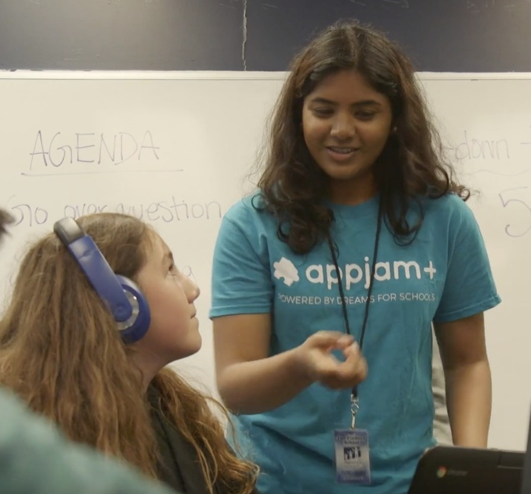

Appjam+ Program Mentor
March 2019 - June 2019
I had the pleasure of teaching 5 middle schoolers Computer Science concepts to help them build a mobile game of their own through the Dreams for Schools organization. Teaching has always been a passion of mine, so it was important to me to be able to share my knowledge of Computer Science concepts to cultivate young minds, and get them involved and interested in STEM fields.
Mentored a group of 5 middle school students, by acting as a program manager to ensure that all projects were completed on time and on schedule
Educated middle school students about STEM fields while teaching them the creative and hands-on technical process of mobile application development